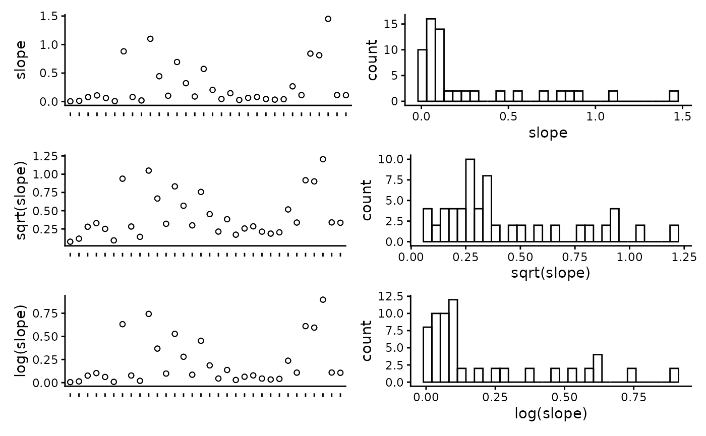
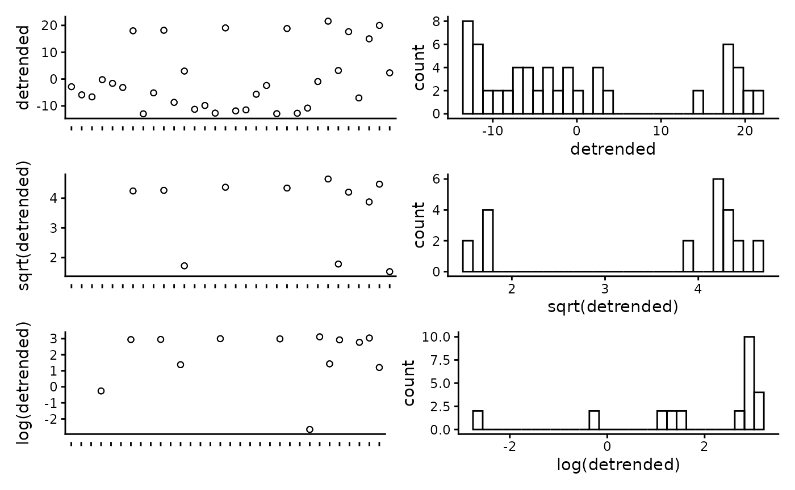
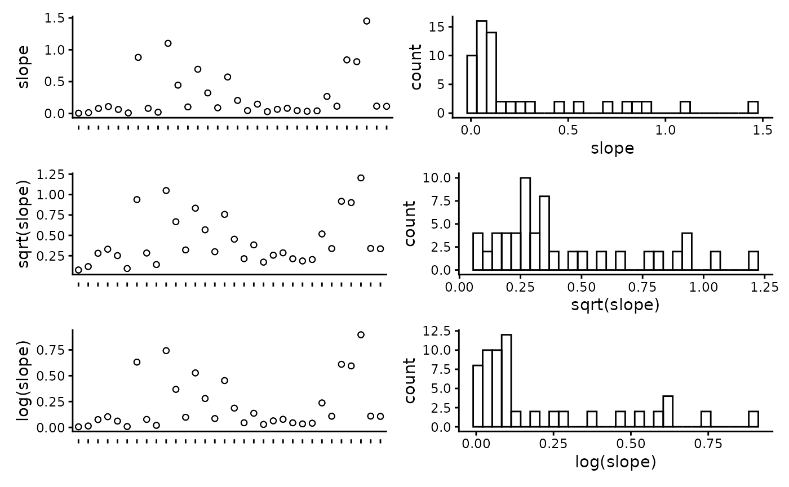
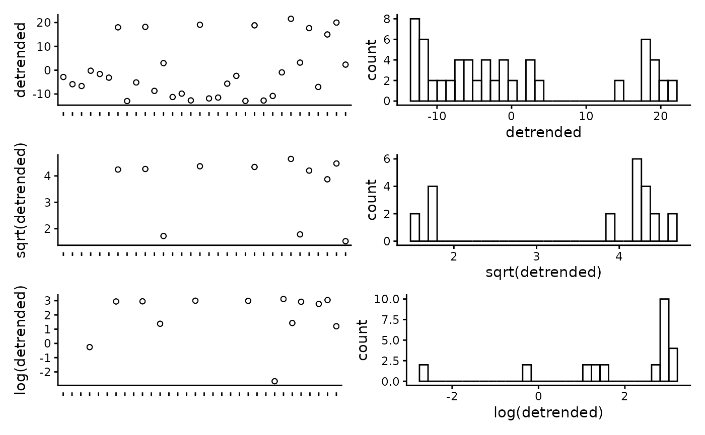
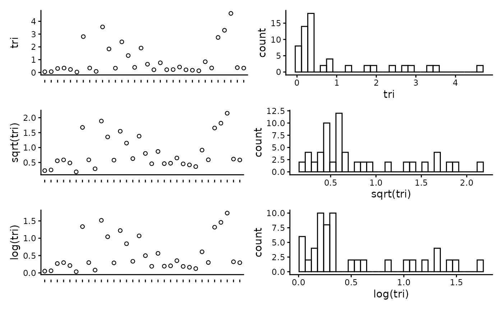
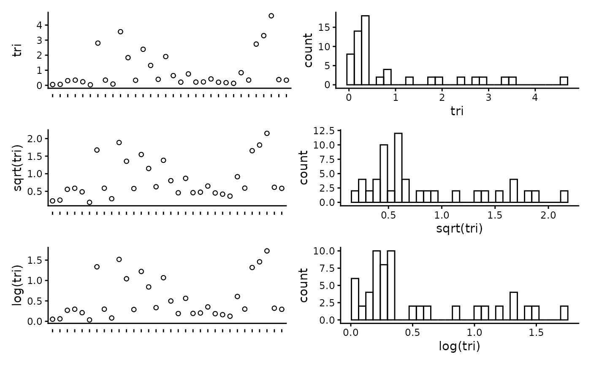

Select top models for fish using FSSgam
Claude Spencer & Brooke Gibbons
2023-11-13
fish-modelling.RmdThis script takes the tidy datasets created in the previous steps and runs model selection. The model selection process utilises the ‘FSSgam’ package created by Becky Fisher, to investigate relationships between predictors and response variables, and create sensible models. Once an appropriate model has been chosen by the user, we then provide R script to spatially predict the response variables and plot these in a tidy format.
R setup
Load libraries. All packages are available through CRAN, aside from ‘FSSgam’, which can be installed following the instructions provided in the GitHub repository https://github.com/beckyfisher/FSSgam.
library(CheckEM)
library(tidyverse)
library(mgcv)
library(devtools)
library(FSSgam)
library(here)
library(ggplot2)
library(ggnewscale)
library(viridis)
library(terra)
library(sf)
library(patchwork)Set the study name. Study names are used throughout to make for reproducible code that can be easily shifted between different campaigns and projects while still providing meaningful filenames.
name <- 'example-bruv-workflow'Load the fish count data. This data is created in the previous workflow, ‘Format & visualise fish data’.
tidy.count <- readRDS(here::here(paste0('r-workflows/data/tidy/',
name,'_tidy-count.rds'))) %>%
dplyr::filter(!is.na(mbdepth)) %>% # If this filters out any then you need to go back and create your spatial layers
glimpse()## Rows: 64
## Columns: 18
## $ campaignid <chr> "2023-03_SwC_stereo-BRUVs", "2023-03_SwC_stereo-BRUVs", "…
## $ sample <chr> "10", "10", "12", "12", "14", "14", "15", "15", "16", "16…
## $ status <chr> "No-take", "No-take", "No-take", "No-take", "No-take", "N…
## $ response <chr> "total_abundance", "species_richness", "total_abundance",…
## $ number <dbl> 111, 13, 94, 15, 191, 9, 146, 16, 99, 14, 312, 18, 38, 13…
## $ longitude_dd <dbl> 114.8533, 114.8533, 114.8816, 114.8816, 114.8686, 114.868…
## $ latitude_dd <dbl> -34.08387, -34.08387, -34.13249, -34.13249, -34.07530, -3…
## $ depth <chr> "44.3", "44.3", "42.6", "42.6", "42.7", "42.7", "45.3", "…
## $ mbdepth <dbl> -42.77519, -42.77519, -42.02835, -42.02835, -41.07679, -4…
## $ slope <dbl> 0.005708777, 0.005708777, 0.013768068, 0.013768068, 0.078…
## $ aspect <dbl> 72.31942, 72.31942, 110.35012, 110.35012, 215.54254, 215.…
## $ tpi <dbl> 0.05208921, 0.05208921, 0.03892708, 0.03892708, 0.2611088…
## $ tri <dbl> 0.05208921, 0.05208921, 0.06246567, 0.06246567, 0.3096442…
## $ roughness <dbl> 0.11757660, 0.11757660, 0.30690765, 0.30690765, 0.7959022…
## $ detrended <dbl> -2.8542883, -2.8542883, -5.8822656, -5.8822656, -6.646017…
## $ mean_relief <dbl> 3.217391, 3.217391, 2.809524, 2.809524, 2.440000, 2.44000…
## $ sd_relief <dbl> 0.7952428, 0.7952428, 0.4023739, 0.4023739, 0.7118052, 0.…
## $ reef <dbl> 0.9690722, 0.9690722, 1.0000000, 1.0000000, 0.9420290, 0.…Set up data for modelling
Set the potential predictor variables that may be used to explain the patterns found in the response variables. It is important here to select ecologically meaningful variables that could influence the chosen response variable.
pred.vars <- c("mbdepth", "roughness", "slope", "detrended",
"tpi", "tri", "aspect", "reef") Create a correlation matrix to assess correlations between predictor variables. If any variables have a correlation greater than 0.95, then only one of these variables should be included in the model selection. In this example data set, ‘roughness’, ‘slope’ and ‘tri’ are all highly correlated, so we will only include roughness as a final predictor variable.
## mbdepth roughness slope detrended tpi tri aspect reef
## mbdepth 1.00 -0.66 -0.65 -0.89 0.03 -0.59 -0.32 -0.17
## roughness -0.66 1.00 0.99 0.48 0.29 0.99 0.06 0.19
## slope -0.65 0.99 1.00 0.47 0.29 0.99 0.06 0.18
## detrended -0.89 0.48 0.47 1.00 0.00 0.42 0.39 0.34
## tpi 0.03 0.29 0.29 0.00 1.00 0.35 -0.02 0.01
## tri -0.59 0.99 0.99 0.42 0.35 1.00 0.04 0.19
## aspect -0.32 0.06 0.06 0.39 -0.02 0.04 1.00 -0.05
## reef -0.17 0.19 0.18 0.34 0.01 0.19 -0.05 1.00Plot the individual predictors to assess if any transformations are necessary. We suggest to only use transformations when absolutely necessary. In the example data set, most of the response variables have relatively balanced distributions, and therefor we have left them untransformed. It is important to note that in this example dataset, the spread of most predictor variables across their full range is not ideal, with gaps in key predictors such as depth and detrended bathymetry. When working with GAMs, gaps and outliers like this may create spurious relationships, and therefor we suggest running these scripts with more complete data than the small example data set provided here.
CheckEM::plot_transformations(pred.vars = pred.vars, dat = tidy.count)
 
 


Reset the predictor variables to remove any highly correlated variables and include any transformed variables.
pred.vars <- c("mbdepth", "roughness", "detrended",
"tpi", "aspect", "reef") Check to make sure response variables have less than 80% zeroes. Full-subset GAM modelling will produce unreliable results if your data is too zero inflated.
unique.vars <- unique(as.character(tidy.count$response))
resp.vars <- character()
for(i in 1:length(unique.vars)){
temp.dat <- tidy.count[which(tidy.count$response == unique.vars[i]), ]
if(length(which(temp.dat$number == 0)) / nrow(temp.dat) < 0.8){
resp.vars <- c(resp.vars, unique.vars[i])}
}
resp.vars ## [1] "total_abundance" "species_richness"Add the directory to save model outputs, and set up the R environment for model selection.
Run the full subset model selection process for count metrics
This loop has been adapted from @beckyfisher/FSSgam, and examples and documentation is available on GitHub and in Fisher, R, Wilson, SK, Sin, TM, Lee, AC, Langlois, TJ. A simple function for full-subsets multiple regression in ecology with R. Ecol Evol. 2018; 8: 6104–6113. https://doi.org/10.1002/ece3.4134.
for(i in 1:length(resp.vars)){
use.dat = as.data.frame(tidy.count[which(tidy.count$response == resp.vars[i]),])
print(resp.vars[i])
Model1 <- gam(number ~ s(mbdepth, k = 3, bs = 'cr'),
family = gaussian(link = "identity"), data = use.dat)
model.set <- generate.model.set(use.dat = use.dat,
test.fit = Model1,
pred.vars.cont = pred.vars,
factor.smooth.interactions = NA,
cyclic.vars = "aspect",
k = 3)
out.list <- fit.model.set(model.set,
max.models = 600,
parallel = T)
names(out.list)
out.list$failed.models
mod.table = out.list$mod.data.out
mod.table = mod.table[order(mod.table$AICc),]
mod.table$cumsum.wi = cumsum(mod.table$wi.AICc)
out.i = mod.table[which(mod.table$delta.AICc <= 2),]
out.all = c(out.all,list(out.i))
var.imp = c(var.imp,list(out.list$variable.importance$aic$variable.weights.raw))
for(m in 1:nrow(out.i)){
best.model.name = as.character(out.i$modname[m])
png(file = here::here(paste(outdir, paste(name, m, resp.vars[i], "mod_fits.png", sep = "_"), sep = "/")))
if(best.model.name != "null"){
par(mfrow = c(3,1), mar = c(9, 4, 3, 1))
best.model = out.list$success.models[[best.model.name]]
plot(best.model, all.terms = T,pages = 1,residuals = T,pch = 16)
mtext(side = 2, text = resp.vars[i], outer = F)}
dev.off()
}
}Tidy the model fits and importance scores. These will be combined with the models fits and importance scores from the model selection for lenght metrics.
names(out.all) <- resp.vars
names(var.imp) <- resp.vars
all.mod.fits <- list_rbind(out.all, names_to = "response")
all.var.imp <- as.data.frame(do.call("rbind", var.imp))Load the fish length data. This data is created in the previous workflow, ‘Format & visualise fish data’.
tidy.length <- readRDS(here::here(paste0('r-workflows/data/tidy/',
name,'_tidy-length.rds'))) %>%
dplyr::filter(!is.na(mbdepth)) %>% # If this filters out any then you need to go back and create your spatial layers
glimpse()## Rows: 64
## Columns: 18
## $ campaignid <chr> "2023-03_SwC_stereo-BRUVs", "2023-03_SwC_stereo-BRUVs", "…
## $ sample <chr> "15", "17", "19", "23", "24", "26", "29", "3", "31", "32"…
## $ number <dbl> 1, 1, 8, 3, 2, 3, 4, 1, 4, 6, 1, 3, 1, 2, 4, 2, 6, 1, 13,…
## $ status <chr> "No-take", "No-take", "No-take", "No-take", "No-take", "N…
## $ response <chr> "greater than Lm", "greater than Lm", "greater than Lm", …
## $ longitude_dd <dbl> 114.8444, 114.8576, 114.7822, 114.9190, 114.8485, 114.928…
## $ latitude_dd <dbl> -34.08478, -34.09635, -34.12047, -34.12832, -34.11789, -3…
## $ depth <chr> "45.3", "43.3", "73.6", "41", "45.6", "36", "42.6", "46.7…
## $ mbdepth <dbl> -44.29804, -42.74676, -71.60112, -38.25594, -44.23959, -4…
## $ slope <dbl> 0.108975978, 0.008719478, 0.880997142, 0.444838455, 0.103…
## $ aspect <dbl> 264.03427, 30.76545, 262.35388, 294.10675, 257.20307, 40.…
## $ tpi <dbl> -0.19527912, 0.02505112, 1.04176044, 0.47694588, 0.042278…
## $ tri <dbl> 0.34487247, 0.03473282, 2.80258274, 1.83670998, 0.3347983…
## $ roughness <dbl> 0.91366196, 0.09923935, 9.01136017, 5.30128479, 1.2933082…
## $ detrended <dbl> -0.2281526, -3.1375041, 17.9911461, -8.6934719, 2.9724391…
## $ mean_relief <dbl> 2.518519, 3.333333, 2.583333, 3.555556, 3.360000, 4.00000…
## $ sd_relief <dbl> 0.8024180, 0.9128709, 0.5036102, 0.8555853, 0.4898979, 0.…
## $ reef <dbl> 0.8292683, 1.0000000, 0.9493671, 1.0000000, 1.0000000, 1.…Check to make sure response variables have less than 80% zeroes. Full-subset GAM modelling will produce unreliable results if your data is too zero inflated.
unique.vars <- unique(as.character(tidy.length$response))
resp.vars <- character()
for(i in 1:length(unique.vars)){
temp.dat <- tidy.length[which(tidy.length$response == unique.vars[i]), ]
if(length(which(temp.dat$number == 0)) / nrow(temp.dat) < 0.8){
resp.vars <- c(resp.vars, unique.vars[i])}
}
resp.vars ## [1] "greater than Lm"Set up the R environment for model selection.
Run the full subset model selection process for length metrics
This loop has been adapted from @beckyfisher/FSSgam, and examples and documentation is available on GitHub and in Fisher, R, Wilson, SK, Sin, TM, Lee, AC, Langlois, TJ. A simple function for full-subsets multiple regression in ecology with R. Ecol Evol. 2018; 8: 6104–6113. https://doi.org/10.1002/ece3.4134.
for(i in 1:length(resp.vars)){
use.dat = as.data.frame(tidy.length[which(tidy.length$response == resp.vars[i]),])
print(resp.vars[i])
Model1 <- gam(number ~ s(mbdepth, k = 3, bs = 'cr'),
family = tw(), data = use.dat)
model.set <- generate.model.set(use.dat = use.dat,
test.fit = Model1,
pred.vars.cont = pred.vars,
factor.smooth.interactions = NA,
cyclic.vars = "aspect",
k = 3
)
out.list <- fit.model.set(model.set,
max.models = 600,
parallel = T)
names(out.list)
out.list$failed.models
mod.table = out.list$mod.data.out
mod.table = mod.table[order(mod.table$AICc),]
mod.table$cumsum.wi = cumsum(mod.table$wi.AICc)
out.i = mod.table[which(mod.table$delta.AICc<=2),]
out.all = c(out.all, list(out.i))
var.imp = c(var.imp, list(out.list$variable.importance$aic$variable.weights.raw))
for(m in 1:nrow(out.i)){
best.model.name = as.character(out.i$modname[m])
png(file = here::here(paste(outdir, paste(name, m, resp.vars[i], "mod_fits.png", sep = "_"), sep = "/")))
if(best.model.name != "null"){
par(mfrow = c(3,1), mar = c(9, 4, 3, 1))
best.model = out.list$success.models[[best.model.name]]
plot(best.model, all.terms = T, pages = 1, residuals = T, pch = 16)
mtext(side = 2, text = resp.vars[i], outer = F)}
dev.off()
}
}Combine the model fits and importance scores with those previously created in full subsets modelling of count metrics, and save out these files.
names(out.all) <- resp.vars
names(var.imp) <- resp.vars
all.mod.fits <- bind_rows(all.mod.fits, list_rbind(out.all, names_to = "response"))
all.var.imp <- bind_rows(all.var.imp, as.data.frame(do.call("rbind",var.imp)))
write.csv(all.mod.fits[ , -2], file = here::here(paste0(outdir, name, "_all.mod.fits.csv")))
write.csv(all.var.imp, file = here::here(paste0(outdir, name, "_all.var.imp.csv")))